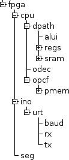

| Previous Lesson | Table of Content | Next Lesson |
|---|
This lesson defines what we want to create and the top level VHDL file for it.
We assume that the purpose of the design is to build an FPGA with the following features:
It is assumed that a suitable hardware exists.
A CPU with I/O is a somewhat complicated beast. In order to tame it, we brake it down into smaller and smaller pieces until the pieces become trivial.
The trick is to perform the breakdown at points where the connection between the pieces is weak (meaning that it consists of only a few signals).
The top level of our FPGA design, and a few components around the FPGA, looks like this:
This design consists of 2 big sub-components cpu and ino, a small sub-component seg, and some local processes like clk_div and deb that are not broken down in other VHDL files, but rather written directly in VHDL.
cpu and ino are described in lessons 4 and 8.
seg is a debug component that has the current program counter (PC) of the CPU as input and displays it as 4 hex digits that show up one by one with a short break between every sequence of hex digits. Since seg is rather board specific, we will not describe it in detail in this lecture.
The local processes are described further down in this lesson. Before that we explain the structure that will be used for all VHDL source file.
Each VHDL source file starts with a comment containing a copyright notice (all files are released under the GPL) and the purpose of the file. Then follows a declaration of the libraries being used.
After the header and libraries, the entity that is defined in the VHDL file is declared. We declare one entity per VHDL file. The declaration consists of the name of the entity, the inputs, and the outputs of the entity. In this declaration the order of input and outputs does not matter, but we try to stick to the convention to declare the inputs before the outputs.
There is one exception: the file common.vhd does not define an entity, but a VHDL package. This package contains the definitions of constants that are used in more than one VHDL source file. This ensures that changes to these constants happen in all files using them.
Finally, the architecture of the entity is specified. The architecture consists of a header and a body.
In the header we declare the components, functions, signals, and constants that are used in the body.
The body defines how the items declared in the header are being used (i.e. instantiated, interconnected etc.). This body contains, so to say, the "intelligence" of the design.
The top level of our design is defined in avr_fpga.vhd. Since this is our first VHDL file we explain it completely, line by line. Later on, we will silently skip repetitions of parts that have been described in other files or that are very similar.
avr_fpga.vhd starts with a copyright header.
1 ------------------------------------------------------------------------------- 2 -- 3 -- Copyright (C) 2009, 2010 Dr. Juergen Sauermann 4 -- 5 -- This code is free software: you can redistribute it and/or modify 6 -- it under the terms of the GNU General Public License as published by 7 -- the Free Software Foundation, either version 3 of the License, or 8 -- (at your option) any later version. 9 -- 10 -- This code is distributed in the hope that it will be useful, 11 -- but WITHOUT ANY WARRANTY; without even the implied warranty of 12 -- MERCHANTABILITY or FITNESS FOR A PARTICULAR PURPOSE. See the 13 -- GNU General Public License for more details. 14 -- 15 -- You should have received a copy of the GNU General Public License 16 -- along with this code (see the file named COPYING). 17 -- If not, see http://www.gnu.org/licenses/. 18 -- 19 ------------------------------------------------------------------------------- 20 ------------------------------------------------------------------------------- 21 -- 22 -- Module Name: avr_fpga - Behavioral 23 -- Create Date: 13:51:24 11/07/2009 24 -- Description: top level of a CPU 25 -- 26 ------------------------------------------------------------------------------- 27src/avr_fpga.vhd
The libraries used are more or less the same in all VHDL files:
28 library IEEE; 29 use IEEE.STD_LOGIC_1164.ALL; 30 use IEEE.STD_LOGIC_ARITH.ALL; 31 use IEEE.STD_LOGIC_UNSIGNED.ALL; 32src/avr_fpga.vhd
The only Xilinx specific components needed for this lecture are the block RAMs. For functional simulation we provide compatible components written in VHDL. For FPGAs from other vendors you can probably include their FPGA libraries, but we have not tested this.
For a top level entity, the inputs and outputs of the entities are the pins of the FPGA.
For a lower level entity, the inputs and outputs of the entity are associated ("connected") with the inputs and outputs of the instance of the entity in a higher level entity. For this to work, the inputs and outputs of the declaration should match the component declaration in the architecture of another entity that instantiates the entity being declared.
Since we discuss the top-level, our inputs and outputs are pins of the FPGA. The top level entity is declared like this:
33 entity avr_fpga is 34 port ( I_CLK_100 : in std_logic; 35 I_SWITCH : in std_logic_vector(9 downto 0); 36 I_RX : in std_logic; 37 38 Q_7_SEGMENT : out std_logic_vector(6 downto 0); 39 Q_LEDS : out std_logic_vector(3 downto 0); 40 Q_TX : out std_logic);src/avr_fpga.vhd
We therefore have the following FPGA pins:
| Pin | Purpose |
|---|---|
| I_CLK_100 | a 100 MHz Clock from the board. |
| I_SWITCH | a 8 bit DIP switch and two single push-buttons. |
| I_RX | the serial input of our UART. |
| Q_7_SEGMENT | 7 lines to the LEDs of a 7-segment display. |
| Q_LEDS | 4 lines to single LEDs |
| Q_TX | the serial output of our UART. |
The lower 8 bits of SWITCH come from a DIP switch while the upper two bits come from two push-buttons. The two push-buttons are used as reset buttons, while the DIP switch goes to the I/O component from where the CPU can read the value set on the switch.
The architecture has a head and a body, The head starts with the architecture keyword. The body starts with begin and ends with end, like this:
43 architecture Behavioral of avr_fpga issrc/avr_fpga.vhd
107 beginsrc/avr_fpga.vhd
184 end Behavioral;src/avr_fpga.vhd
As we have seen in the first figure in this lesson, the top level uses 3 components: cpu, io, and seg. These components have to be declared in the header of the architecture. The architecture contains component declarations, signal declarations and others. We normally declare components and signals in the following order:
The first component declaration cpu_core and the signals driven by its instances are:
45 component cpu_core 46 port ( I_CLK : in std_logic; 47 I_CLR : in std_logic; 48 I_INTVEC : in std_logic_vector( 5 downto 0); 49 I_DIN : in std_logic_vector( 7 downto 0); 50 51 Q_OPC : out std_logic_vector(15 downto 0); 52 Q_PC : out std_logic_vector(15 downto 0); 53 Q_DOUT : out std_logic_vector( 7 downto 0); 54 Q_ADR_IO : out std_logic_vector( 7 downto 0); 55 Q_RD_IO : out std_logic; 56 Q_WE_IO : out std_logic); 57 end component; 58 59 signal C_PC : std_logic_vector(15 downto 0); 60 signal C_OPC : std_logic_vector(15 downto 0); 61 signal C_ADR_IO : std_logic_vector( 7 downto 0); 62 signal C_DOUT : std_logic_vector( 7 downto 0); 63 signal C_RD_IO : std_logic; 64 signal C_WE_IO : std_logic;src/avr_fpga.vhd
The second component declaration io and its signals are:
66 component io 67 port ( I_CLK : in std_logic; 68 I_CLR : in std_logic; 69 I_ADR_IO : in std_logic_vector( 7 downto 0); 70 I_DIN : in std_logic_vector( 7 downto 0); 71 I_RD_IO : in std_logic; 72 I_WE_IO : in std_logic; 73 I_SWITCH : in std_logic_vector( 7 downto 0); 74 I_RX : in std_logic; 75 76 Q_7_SEGMENT : out std_logic_vector( 6 downto 0); 77 Q_DOUT : out std_logic_vector( 7 downto 0); 78 Q_INTVEC : out std_logic_vector(5 downto 0); 79 Q_LEDS : out std_logic_vector( 1 downto 0); 80 Q_TX : out std_logic); 81 end component; 82 83 signal N_INTVEC : std_logic_vector( 5 downto 0); 84 signal N_DOUT : std_logic_vector( 7 downto 0); 85 signal N_TX : std_logic; 86 signal N_7_SEGMENT : std_logic_vector( 6 downto 0);src/avr_fpga.vhd
Note: Normally we would have used I_ as a prefix for signals driven by instance ino of io. This conflicts, however, with the prefix reserved for inputs and we have used the next letter n of ino as prefix instead.
The last component is seg:
88 component segment7 89 port ( I_CLK : in std_logic; 90 91 I_CLR : in std_logic; 92 I_OPC : in std_logic_vector(15 downto 0); 93 I_PC : in std_logic_vector(15 downto 0); 94 95 Q_7_SEGMENT : out std_logic_vector( 6 downto 0)); 96 end component; 97 98 signal S_7_SEGMENT : std_logic_vector( 6 downto 0);src/avr_fpga.vhd
The local signals, which are not driven by any component, but by local processes and inputs of the entity, are:
100 signal L_CLK : std_logic := '0'; 101 signal L_CLK_CNT : std_logic_vector( 2 downto 0) := "000"; 102 signal L_CLR : std_logic; -- reset, active low 103 signal L_CLR_N : std_logic := '0'; -- reset, active low 104 signal L_C1_N : std_logic := '0'; -- switch debounce, active low 105 signal L_C2_N : std_logic := '0'; -- switch debounce, active low 106 107 beginsrc/avr_fpga.vhd
The begin keyword in the last line marks the end of the header of the architecture and the start of its body.
We normally use the following order in the architecture body:
Thus the architecture body is more or less using the same order as the architecture header. The component instantiations instantiate one or more instances of a component type and connect the "ports" of the instantiated component to the signals in the architecture.
The first component declared was cpu so we also instantiate it first:
109 cpu : cpu_core 110 port map( I_CLK => L_CLK, 111 I_CLR => L_CLR, 112 I_DIN => N_DOUT, 113 I_INTVEC => N_INTVEC, 114 115 Q_ADR_IO => C_ADR_IO, 116 Q_DOUT => C_DOUT, 117 Q_OPC => C_OPC, 118 Q_PC => C_PC, 119 Q_RD_IO => C_RD_IO, 120 Q_WE_IO => C_WE_IO);src/avr_fpga.vhd
The first line instantiates a component of type cpu_core and calls the instance cpu. The following lines map the names of the ports in the component declaration (in the architecture header) to either inputs of the entity, outputs of the entity, or signals declared in the architecture header.
We take cpu as an opportunity to explain our naming convention for signals. Our rule for entity inputs and outputs has the consequence that all left sides of the port map have either an I_ prefix or an O_ prefix. This follows from the fact that a component instantiated in one architecture corresponds to an entity declared in some other VHDL file and there the I_ or O_ convention applies,
The next observation is that all component outputs either drive an entity output or a local signal that starts with the letter chosen for the instantiated component. This is the C_ in the cpu case. The cpu does not drive an entity output directly (so all outputs map to C_ signals), but in the io outputs there is one driving an entity output (see below).
Finally the component inputs can be driven from more or less anywhere, but from the prefix (L_ or not) we can see if the signal is directly driven by another component (when the prefix is not L_) or by some logic defined further down in the architecture (signal assignments, processes).
Thus for the cpu component we can already tell that this component drives a number of local signals (that are not entity outputs but inputs to other components or local processes)> These signals are those on the right side of the port map starting with C_. We can also tell that there are some local processes generating a clock signal L_CLK and a reset signal L_CLR, and the ino component (which uses prefix N_) drives an interrupt vector N_INTVEC and a data bus N_DOUT.
The next two components being instantiated are ino of type io and seg of type segment7:
122 ino : io 123 port map( I_CLK => L_CLK, 124 I_CLR => L_CLR, 125 I_ADR_IO => C_ADR_IO, 126 I_DIN => C_DOUT, 127 I_RD_IO => C_RD_IO, 128 I_RX => I_RX, 129 I_SWITCH => I_SWITCH(7 downto 0), 130 I_WE_IO => C_WE_IO, 131 132 Q_7_SEGMENT => N_7_SEGMENT, 133 Q_DOUT => N_DOUT, 134 Q_INTVEC => N_INTVEC, 135 Q_LEDS => Q_LEDS(1 downto 0), 136 Q_TX => N_TX); 137 138 seg : segment7 139 port map( I_CLK => L_CLK, 140 I_CLR => L_CLR, 141 I_OPC => C_OPC, 142 I_PC => C_PC, 143 144 Q_7_SEGMENT => S_7_SEGMENT);src/avr_fpga.vhd
Then come the local processes. The first process divides the 100 MHz input clock from the board into a 25 MHz clock used by the CPU. The design can, with some tuning of the timing optimizations, run at 33 MHz, but for our purposes we are happy with 25 MHz.
148 clk_div : process(I_CLK_100) 149 begin 150 if (rising_edge(I_CLK_100)) then 151 L_CLK_CNT <= L_CLK_CNT + "001"; 152 if (L_CLK_CNT = "001") then 153 L_CLK_CNT <= "000"; 154 L_CLK <= not L_CLK; 155 end if; 156 end if; 157 end process;src/avr_fpga.vhd
The second process is deb. It debounces the push-buttons used to reset the cpu and ino components. When either button is pushed ('0' on SWITCH(8) or SWITCH(9)) then CLR_N goes low immediately and stays low for two more cycles after the button was released.
161 deb : process(L_CLK) 162 begin 163 if (rising_edge(L_CLK)) then 164 -- switch debounce 165 if ((I_SWITCH(8) = '0') or (I_SWITCH(9) = '0')) then -- pushed 166 L_CLR_N <= '0'; 167 L_C2_N <= '0'; 168 L_C1_N <= '0'; 169 else -- released 170 L_CLR_N <= L_C2_N; 171 L_C2_N <= L_C1_N; 172 L_C1_N <= '1'; 173 end if; 174 end if; 175 end process;src/avr_fpga.vhd
Finally we have the signals driven directly from other signals. This kind of signal assignments are the same as processes, but use a simpler syntax for frequently used logic.
177 L_CLR <= not L_CLR_N; 178 179 Q_LEDS(2) <= I_RX; 180 Q_LEDS(3) <= N_TX; 181 Q_7_SEGMENT <= N_7_SEGMENT when (I_SWITCH(7) = '1') else S_7_SEGMENT; 182 Q_TX <= N_TX;src/avr_fpga.vhd
CLR is generated by inverting CLR_N. The serial input and the serial output are visualized by means of two LEDs. The 7 segment output can be driven from two sources: from a software controlled I/O register in the I/O unit, or from the seven segment component (that shows the current PC and opcode) being executed. The latter component is quite useful for debugging purposes.
Note: We use a _N suffix to denote an active low signal.
Active low signals normally come from some FPGA pin since inside
the FPGA active low signals have no advantage over active high signals.
In the good old TTL days active low signals were preferred for strobe
signals since the HIGH to LOW transition in TTL was faster than the LOW
to high transition. Some active low signals we see today are left-overs
from those days.
Another common case is switches and push-buttons that are held high
with a pull-up resistor when open and short-cut to ground when the
switch is closed.
The following figure shows the breakdown of almost all components in our design. Only the memory modules in sram and pmem and the individual registers in regs are hidden because they would blow up the structure without providing too much information.

We have already discussed the top level fpga and its 3 components cpu, ino, and seg.
The cpu will be further broken down into a data path dpath, an opcode decode odec, and an opcode fetch opcf. The data path consist of a 16-bit ALU alui, a register file regs, and a data memory sram. The opcode fetch contains a program counter pcnt and a program memory pmem.
The ino contains a uart that is further broken down into a baud rate generator baud, a serial receiver rx, and a serial transmitter tx.
| Previous Lesson | Table of Content | Next Lesson |
|---|